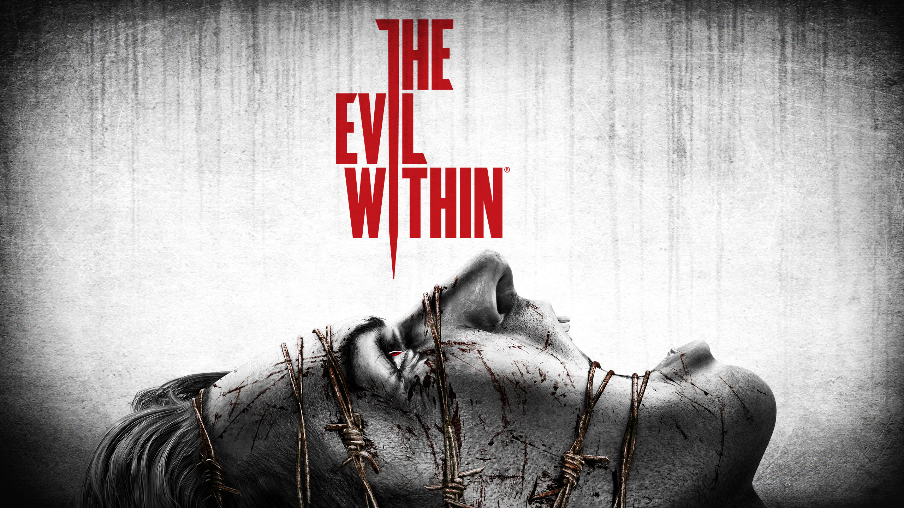

Brief intro to all the characters
Descriptions: Sebastian Castellanos A veteran detective struggling with personal tragedy. Determined, skeptical, and emotionally closed off, Sebastian becomes the unwilling hero thrown into a surreal nightmare. Ruvik (Rubén Victoriano) A brilliant but tormented mind behind the STEM project. After suffering horrific abuse and loss, he turns into the architect of the twisted world Sebastian must survive. His motivations blur the line between vengeance and madness. Juli Kidman Mysterious and secretive, Kidman is a junior detective with ties to the shadowy organization Mobius. Her presence raises more questions than answers, and her true mission is slowly revealed as the story progresses. Joseph Oda Loyal to Sebastian, Joseph is his partner and closest ally. Calm and rational, he provides moral and tactical support, though even he begins to succumb to the horrors of the STEM world.
